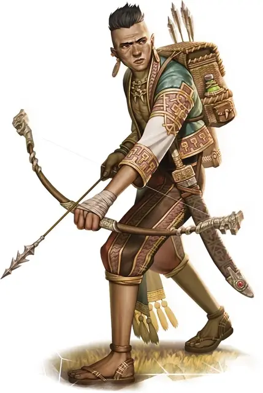

Охотник на дракона
Dragon Hunter
Средний Гуманоид (Человек), любое мировоззрение

Класс Доспеха 13 (проклепанный кожаный доспех)
Хиты 58 (9к8 + 18)
Скорость 30 футов
| мод | спас | ||
|---|---|---|---|
| СИЛ | 16 | +3 | +3 |
| ЛОВ | 13 | +1 | +1 |
| ТЕЛ | 14 | +2 | +2 |
| мод | спас | ||
|---|---|---|---|
| ИНТ | 10 | +0 | +0 |
| МДР | 11 | +0 | +0 |
| ХАР | 10 | +0 | +0 |
Навыки Атлетика +5, Восприятие +2
Чувства пассивное Восприятие 12
Языки один любой язык (обычно Общий)
Опасность 3 (700 опыта)
Бонус мастерства +2
Среда обитания Арктика, Город, Горы, Лес, Луг, Побережье, Подземье, Холмы
Действия
Мультиатака. Охотник на дракона совершает две атаки длинным мечом. Если у него вынут короткий меч, он может также совершить атаку коротким мечом.
Длинный меч. Рукопашная атака оружием: +5 к попаданию, досягаемость 5 футов, одна цель. Попадание: 7 (1к8 + 3) рубящего урона, или 8 (1к10 + 3) рубящего урона, если используется двумя руками.
Короткий меч. Рукопашная атака оружием: +5 к попаданию, досягаемость 5 футов, одна цель. Попадание: 6 (1к6 + 3) колющего урона.
Длинный лук. Дальнобойная атака оружием: +3 к попаданию, дистанция 150/600 футов, одна цель. Попадание: 5 (1к8 + 1) колющего урона.
Описание
Они выросли вместе и разделяют убеждение, что должны убить бакунаву [bakunawa] в качестве мести за зло, причиненное их клану.